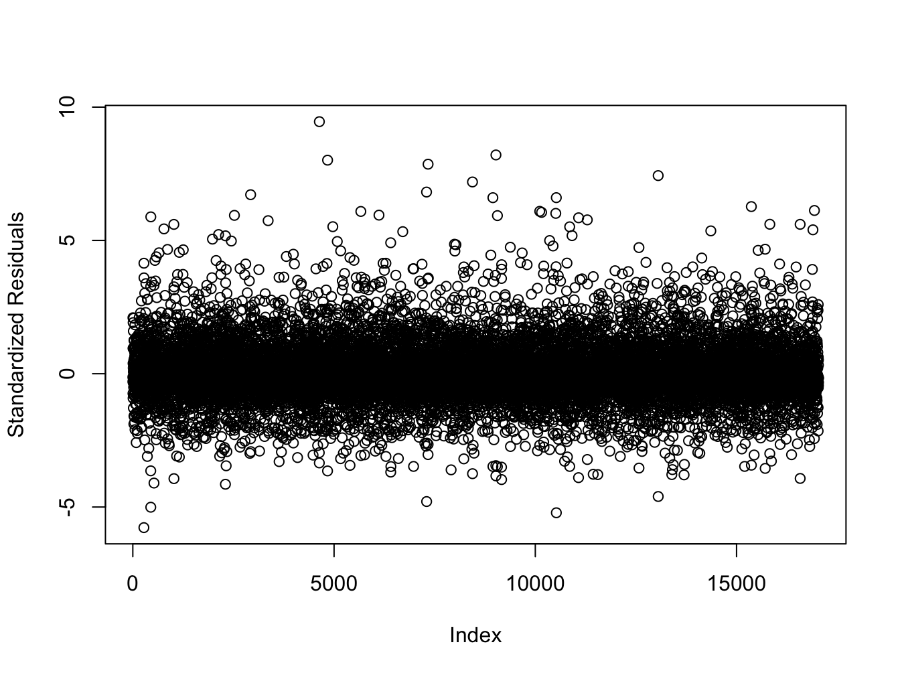
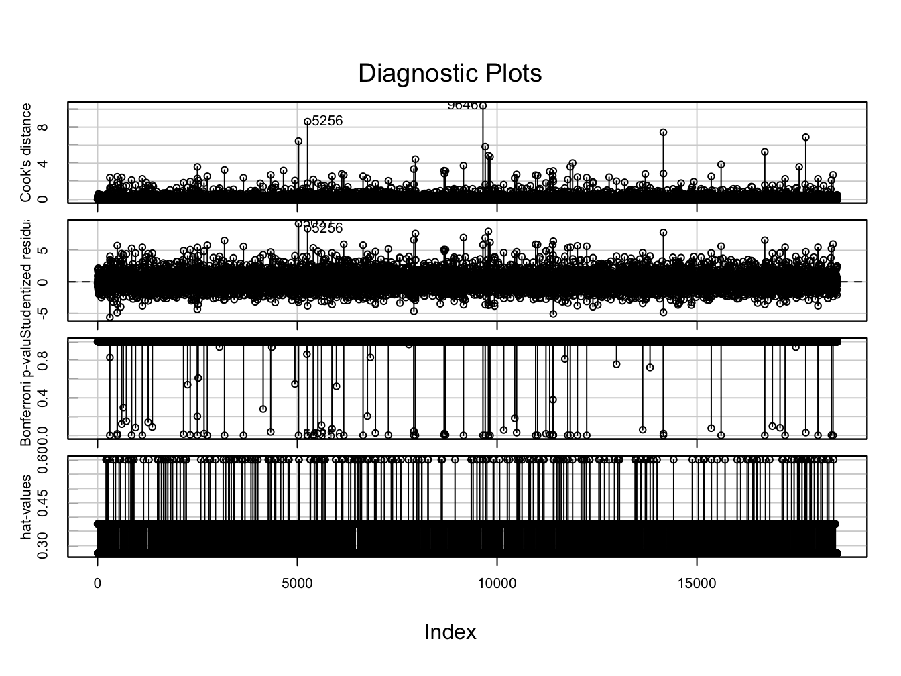
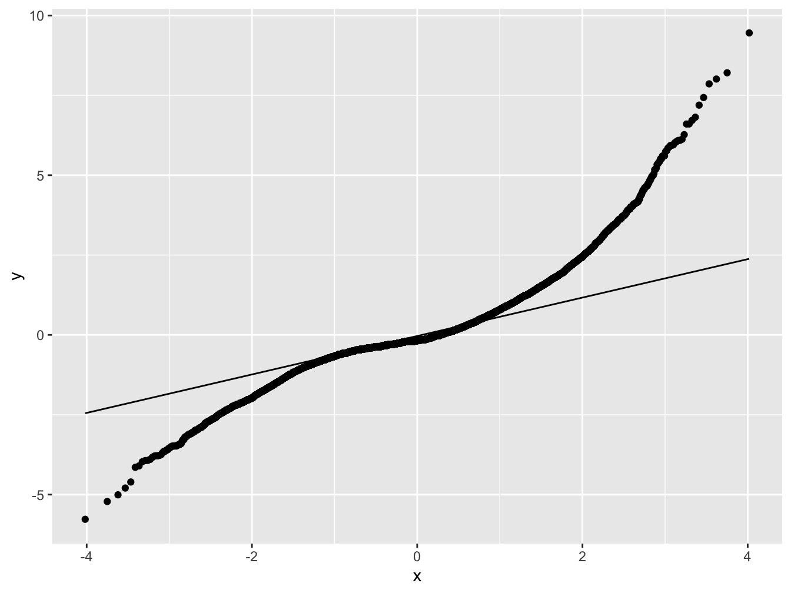
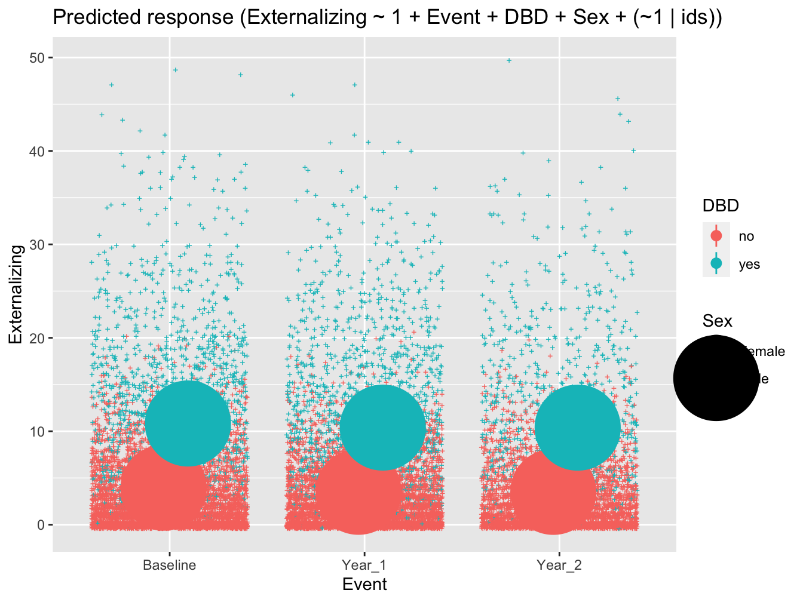
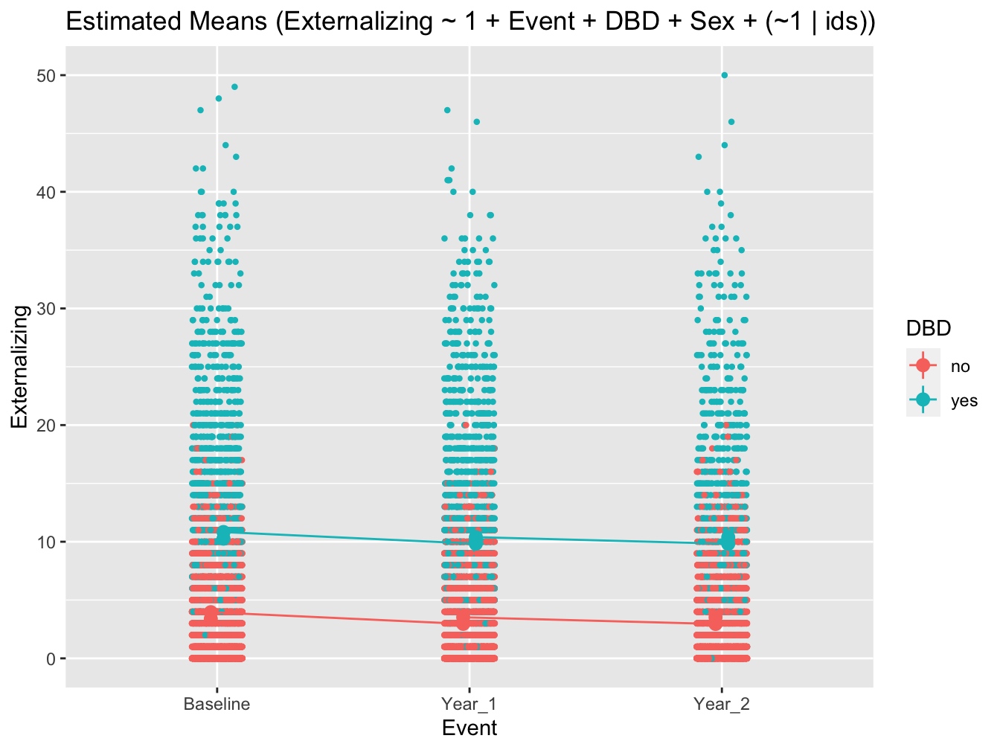
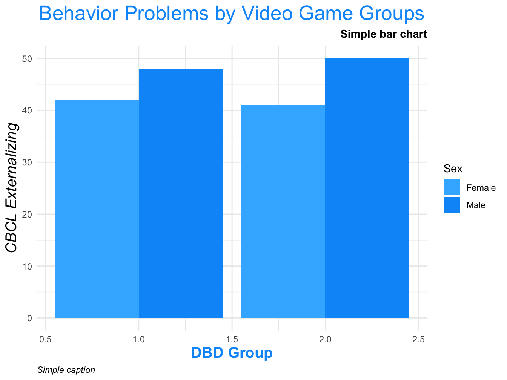
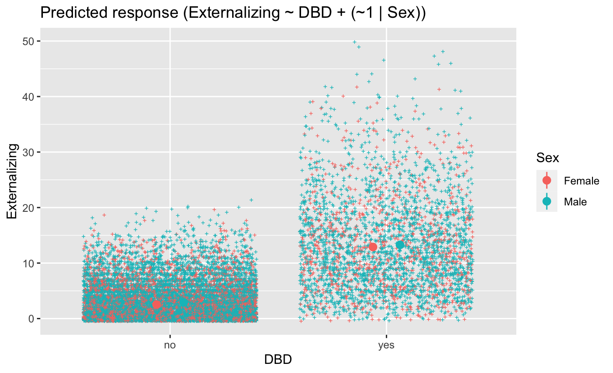

## Install necessary packages (if not already installed)
if (!("lme4" %in% installed.packages())) install.packages("lme4")
if (!("lmerTest" %in% installed.packages())) install.packages("lmerTest")
if (!("tidyverse" %in% installed.packages())) install.packages("tidyverse")
if (!("arrow" %in% installed.packages())) install.packages("arrow")
if (!("afex" %in% installed.packages())) install.packages("afex")
if (!("janitor" %in% installed.packages())) install.packages("janitor")
if (!("skimr" %in% installed.packages())) install.packages("skimr")
if (!("sdamr" %in% installed.packages())) install.packages("sdamr")
if (!("formatR" %in% installed.packages())) install.packages("formatR")
if (!("report" %in% installed.packages())) install.packages("report")
if (!("easystats" %in% installed.packages())) install.packages("easystats")
if (!("emmeans" %in% installed.packages())) install.packages("emmeans")
if (!("poorman" %in% installed.packages())) install.packages("poorman")
if (!("parameters" %in% installed.packages())) install.packages("parameters")
if (!("modelbased" %in% installed.packages())) install.packages("modelbased")
if (!("DT" %in% installed.packages())) install.packages("DT")
if (!("data.table" %in% installed.packages())) install.packages("data.table")
if (!("arsenal" %in% installed.packages())) install.packages("arsenal")
if (!("kableExtra" %in% installed.packages())) install.packages("kableExtra")
if (!("equatiomatic" %in% installed.packages())) install.packages("equatiomatic")
if (!("gtsummary" %in% installed.packages())) install.packages("gtsummary")ex1.interceptonly
Linear Mixed Model with a Random-Intercept (LMM:ri)
The LMM:ri is similar to traditional (fixed-effect) linear regression extending on this approach by including a subject-specific random-effect that allows each participant to have their own unique intercept value, in addition to the overall mean-level (fixed-effect) intercept value
LMM:ri to analyze trajectories of scores on the externalizing subscale of the child behavior checklist (CBCL) obtained across three measurement occasions in a sample of youth taking part in the ABCD Study. Our primary aim is to characterize stability and change in CBCL externalizing scores across assessments, while accounting for observations that are clustered within youth over time. To do so, we will use the LMM:ri to simultaneously model an overall sample mean trajectory (fixed effect) and subject-specific (random) effects that vary randomly about the sample mean trajectory.
:::
Preliminary Setup
example-text before code block
example-text after code block
## Load packages
library(lme4)
library(lmerTest)
library(tidyverse)
library(arrow)
library(afex)
library(janitor)
library(skimr)
library(sdamr)
library(formatR)
library(report)
library(easystats)
library(emmeans)
library(poorman)
library(parameters)
library(modelbased)
library(DT)
library(data.table)
library(arsenal)
library(kableExtra)
library(equatiomatic)
library(gtsummary)knitr::opts_chunk$set(echo = T, message=F, warning=F, error=F,
comment=NA, cache=T, code_folding=T,
R.options=list(width=220), fig.align='center',
out.width='75%', fig.asp=.75)Descriptives Overview
df_long<- read_csv("/Users/shawes/Desktop/df_long.csv")
df_long_sub<- read_csv("/Users/shawes/Desktop/df_long_sub.csv")
## Create a viewable 'datatable' of the primary dataframe (df)
datatable(head(df_long, 50, rownames = FALSE),extensions = 'AutoFill','ColReorder', options = list(autoFill = TRUE,colReorder = TRUE,
columnDefs = list(list(className = 'dt-center', targets = 10)),
order = list(list(3, 'asc'), list(4, 'desc')),
pageLength = 10,
lengthMenu = c(10, 15, 20),
initComplete = JS(
"function(settings, json) {",
"$(this.api().table().header()).css({'background-color': '#808080', 'color': '#fff'});",
"}")
))## Not run:
# Specify table size by pixels
#kable(cbind(df_long, df_long), "html") %>%
# kable_styling() %>%
# scroll_box(width = "100%", height = "500px")## Create a descriptives table of study variables by measurement occasion
descriptives_1 <- tableby.control(test=FALSE, total=FALSE,
numeric.test="kwt", cat.test="chisq",
numeric.stats=c("N", "meansd", "median", "range"
), #"Nmiss2"
cat.stats=c("countpct"), #"Nmiss2"
stats.labels=list(N='Count', meansd="Mean (SD)", median
='Median', range='Min - Max'
)) #, Nmiss2 ='Missing'
my_cont_labels <- list(
Age = "Age",
Weekly_Gaming_Hours = "Weekly # of Video Gaming Hrs",
Externalizing = "CBCL Externalizing Scale"
)
tab_descriptives_1 <- tableby(Event ~ Age + Weekly_Gaming_Hours +
Externalizing,
data=df_long, control=descriptives_1)
#summary(tab_descriptives_1, labelTranslations = my_cont_labels , text=TRUE, title = #"Continuous Outcomes", term.name = TRUE)
# Push table object through kable and kable_styling
tab_descriptives_1 %>%
summary(text=TRUE, digits.pct=1, digits=1) %>%
kable(caption = "Continuous Outcomes") %>%
kable_styling(bootstrap_options = "striped", full_width = FALSE, html_font = "Cambria",
font_size = 15,
position = "center", fixed_thead = T) %>%
row_spec(2:3, bold = F, extra_css = 'vertical-align: middle !important;') %>%
column_spec(1, width = "20em", background = "light grey", bold = T, border_right = T) %>%
column_spec(2, width = "20em", border_right = T) %>%
column_spec(3, width = "20em", border_right = T) %>%
footnote(general = "Here is a general comments of the table. ") %>%
scroll_box(width = "75%", height = "500px")| Baseline (N=6513) | Year_1 (N=6258) | Year_2 (N=5745) | |
|---|---|---|---|
| Age | |||
| - Count | 6507 | 0 | 0 |
| - Mean (SD) | 9.5 (0.5) | NA | NA |
| - Median | 9.0 | NA | NA |
| - Min - Max | 8.0 - 11.0 | NA | NA |
| Weekly_Gaming_Hours | |||
| - Count | 6427 | 6207 | 5411 |
| - Mean (SD) | 11.3 (8.3) | 13.3 (8.3) | 14.3 (10.6) |
| - Median | 9.0 | 11.0 | 14.0 |
| - Min - Max | 0.0 - 28.0 | 0.0 - 28.0 | 0.0 - 28.0 |
| Externalizing | |||
| - Count | 6510 | 6246 | 4444 |
| - Mean (SD) | 5.1 (6.5) | 4.8 (6.2) | 4.4 (6.1) |
| - Median | 3.0 | 3.0 | 2.0 |
| - Min - Max | 0.0 - 49.0 | 0.0 - 47.0 | 0.0 - 50.0 |
| Note: | |||
| Here is a general comments of the table. |
## Create a descriptives table of study variables by measurement occasion
descriptives_2 <- tableby.control(test=FALSE, total=FALSE,
numeric.test="kwt", cat.test="chisq",
numeric.stats=c("N", "meansd", "median", "range"
), # "Nmiss2"
cat.stats=c("countpct"), # "Nmiss2"
stats.labels=list(N='Count', meansd="Mean (SD)", median
='Median', range='Min - Max'
)) # , Nmiss2 ='Missing'
my_cat_labels <- list(
Event = "Year",
Sex = "Sex",
MatureVideoGames = "Mature Video Games",
DBD = "DBD"
)
tab_descriptives_2 <- tableby(Event ~ Sex + MatureVideoGames + DBD,
data=df_long, control=descriptives_2)
#summary(tab_descriptives_2, labelTranslations = my_cat_labels , text=TRUE, title = #"Categorical Outcomes", term.name = TRUE)
# Push table object through kable and kable_styling
tab_descriptives_2 %>%
summary(text=TRUE, digits.pct=1, digits=1) %>%
kable(caption = "Categorical Outcomes") %>%
kable_styling(bootstrap_options = "striped", full_width = FALSE, font_size = 15,
position = "center", fixed_thead = T) %>%
row_spec(2:3, bold = F, extra_css = 'vertical-align: middle !important;') %>%
column_spec(1, width = "20em", background = "light grey", bold = T, border_right = T) %>%
column_spec(2, width = "20em", border_right = T) %>%
#column_spec(3, width = "20em", border_right = T) %>%
footnote(general = "Here is a general comments of the table. ") %>%
scroll_box(width = "75%", height = "500px")| Baseline (N=6513) | Year_1 (N=6258) | Year_2 (N=5745) | |
|---|---|---|---|
| Sex | |||
| - Female | 2132 (32.7%) | 2048 (32.7%) | 1872 (32.6%) |
| - Male | 4381 (67.3%) | 4210 (67.3%) | 3873 (67.4%) |
| MatureVideoGames | |||
| - Count | 6506 | 6250 | 5724 |
| - Mean (SD) | 1.2 (0.4) | 1.2 (0.4) | 1.2 (0.4) |
| - Median | 1.0 | 1.0 | 1.0 |
| - Min - Max | 1.0 - 2.0 | 1.0 - 2.0 | 1.0 - 2.0 |
| DBD | |||
| - no | 5207 (80.5%) | 4861 (78.7%) | 3639 (79.8%) |
| - yes | 1258 (19.5%) | 1319 (21.3%) | 922 (20.2%) |
| Note: | |||
| Here is a general comments of the table. |
Results
## Linear Mixed Model with a random intercept (LMM-ri)
random_intercepts <- lmer(Externalizing ~ 1 + Event + DBD + Sex + (1|ids), data = df_long, REML=T)
print(random_intercepts)Linear mixed model fit by REML ['lmerModLmerTest']
Formula: Externalizing ~ 1 + Event + DBD + Sex + (1 | ids)
Data: df_long
REML criterion at convergence: 97602.77
Random effects:
Groups Name Std.Dev.
ids (Intercept) 3.843
Residual 3.138
Number of obs: 17038, groups: ids, 6510
Fixed Effects:
(Intercept) EventYear_1 EventYear_2 DBDyes SexMale
3.3927 -0.4350 -0.4419 6.8720 0.5667 The code snippet above tells R to run a linear mixed model using lmer from the lme4 library. The left side of the “~” symbol specifies the dependent variable; the right side specifies days as the independent variable(s). The code (1 | Subject) specifies a random intercept for each subject.
## Output and reports extending from the LMM-ri analyses
summary(random_intercepts)Linear mixed model fit by REML. t-tests use Satterthwaite's method ['lmerModLmerTest']
Formula: Externalizing ~ 1 + Event + DBD + Sex + (1 | ids)
Data: df_long
REML criterion at convergence: 97602.8
Scaled residuals:
Min 1Q Median 3Q Max
-4.8238 -0.3683 -0.1491 0.3100 7.9006
Random effects:
Groups Name Variance Std.Dev.
ids (Intercept) 14.768 3.843
Residual 9.847 3.138
Number of obs: 17038, groups: ids, 6510
Fixed effects:
Estimate Std. Error df t value Pr(>|t|)
(Intercept) 3.393e+00 9.965e-02 6.874e+03 34.047 < 2e-16 ***
EventYear_1 -4.350e-01 5.629e-02 9.490e+03 -7.729 1.20e-14 ***
EventYear_2 -4.419e-01 6.367e-02 9.880e+03 -6.940 4.18e-12 ***
DBDyes 6.872e+00 9.235e-02 1.685e+04 74.416 < 2e-16 ***
SexMale 5.667e-01 1.143e-01 5.364e+03 4.959 7.31e-07 ***
---
Signif. codes: 0 '***' 0.001 '**' 0.01 '*' 0.05 '.' 0.1 ' ' 1
Correlation of Fixed Effects:
(Intr) EvnY_1 EvnY_2 DBDyes
EventYear_1 -0.268
EventYear_2 -0.244 0.431
DBDyes -0.153 -0.033 0.024
SexMale -0.765 0.002 -0.001 -0.035confint(random_intercepts, level = 0.95, method = "Wald") 2.5 % 97.5 %
.sig01 NA NA
.sigma NA NA
(Intercept) 3.1974334 3.5880504
EventYear_1 -0.5453552 -0.3247111
EventYear_2 -0.5666643 -0.3170715
DBDyes 6.6910049 7.0529952
SexMale 0.3427251 0.7907085report(random_intercepts)We fitted a linear mixed model (estimated using REML and nloptwrap optimizer) to predict Externalizing with Event (formula: Externalizing ~ 1 + Event + DBD + Sex). The model included ids as random effect (formula: ~1 |
ids). The model's total explanatory power is substantial (conditional R2 = 0.69) and the part related to the fixed effects alone (marginal R2) is of 0.24. The model's intercept, corresponding to Event = Baseline, is at
3.39 (95% CI [3.20, 3.59], t(17031) = 34.05, p < .001). Within this model:
- The effect of Event [Year_1] is statistically significant and negative (beta = -0.44, 95% CI [-0.55, -0.32], t(17031) = -7.73, p < .001; Std. beta = -0.07, 95% CI [-0.09, -0.05])
- The effect of Event [Year_2] is statistically significant and negative (beta = -0.44, 95% CI [-0.57, -0.32], t(17031) = -6.94, p < .001; Std. beta = -0.07, 95% CI [-0.09, -0.05])
- The effect of DBD [yes] is statistically significant and positive (beta = 6.87, 95% CI [6.69, 7.05], t(17031) = 74.42, p < .001; Std. beta = 1.09, 95% CI [1.06, 1.12])
- The effect of Sex [Male] is statistically significant and positive (beta = 0.57, 95% CI [0.34, 0.79], t(17031) = 4.96, p < .001; Std. beta = 0.09, 95% CI [0.05, 0.13])
Standardized parameters were obtained by fitting the model on a standardized version of the dataset. 95% Confidence Intervals (CIs) and p-values were computed using a Wald t-distribution approximation., We fitted a
linear mixed model (estimated using REML and nloptwrap optimizer) to predict Externalizing with DBD (formula: Externalizing ~ 1 + Event + DBD + Sex). The model included ids as random effect (formula: ~1 | ids). The
model's total explanatory power is substantial (conditional R2 = 0.69) and the part related to the fixed effects alone (marginal R2) is of 0.24. The model's intercept, corresponding to DBD = no, is at 3.39 (95% CI
[3.20, 3.59], t(17031) = 34.05, p < .001). Within this model:
- The effect of Event [Year_1] is statistically significant and negative (beta = -0.44, 95% CI [-0.55, -0.32], t(17031) = -7.73, p < .001; Std. beta = -0.07, 95% CI [-0.09, -0.05])
- The effect of Event [Year_2] is statistically significant and negative (beta = -0.44, 95% CI [-0.57, -0.32], t(17031) = -6.94, p < .001; Std. beta = -0.07, 95% CI [-0.09, -0.05])
- The effect of DBD [yes] is statistically significant and positive (beta = 6.87, 95% CI [6.69, 7.05], t(17031) = 74.42, p < .001; Std. beta = 1.09, 95% CI [1.06, 1.12])
- The effect of Sex [Male] is statistically significant and positive (beta = 0.57, 95% CI [0.34, 0.79], t(17031) = 4.96, p < .001; Std. beta = 0.09, 95% CI [0.05, 0.13])
Standardized parameters were obtained by fitting the model on a standardized version of the dataset. 95% Confidence Intervals (CIs) and p-values were computed using a Wald t-distribution approximation. and We fitted a
linear mixed model (estimated using REML and nloptwrap optimizer) to predict Externalizing with Sex (formula: Externalizing ~ 1 + Event + DBD + Sex). The model included ids as random effect (formula: ~1 | ids). The
model's total explanatory power is substantial (conditional R2 = 0.69) and the part related to the fixed effects alone (marginal R2) is of 0.24. The model's intercept, corresponding to Sex = Female, is at 3.39 (95% CI
[3.20, 3.59], t(17031) = 34.05, p < .001). Within this model:
- The effect of Event [Year_1] is statistically significant and negative (beta = -0.44, 95% CI [-0.55, -0.32], t(17031) = -7.73, p < .001; Std. beta = -0.07, 95% CI [-0.09, -0.05])
- The effect of Event [Year_2] is statistically significant and negative (beta = -0.44, 95% CI [-0.57, -0.32], t(17031) = -6.94, p < .001; Std. beta = -0.07, 95% CI [-0.09, -0.05])
- The effect of DBD [yes] is statistically significant and positive (beta = 6.87, 95% CI [6.69, 7.05], t(17031) = 74.42, p < .001; Std. beta = 1.09, 95% CI [1.06, 1.12])
- The effect of Sex [Male] is statistically significant and positive (beta = 0.57, 95% CI [0.34, 0.79], t(17031) = 4.96, p < .001; Std. beta = 0.09, 95% CI [0.05, 0.13])
Standardized parameters were obtained by fitting the model on a standardized version of the dataset. 95% Confidence Intervals (CIs) and p-values were computed using a Wald t-distribution approximation.report_performance(random_intercepts)The model's total explanatory power is substantial (conditional R2 = 0.69) and the part related to the fixed effects alone (marginal R2) is of 0.24report_statistics(random_intercepts)beta = 3.39, 95% CI [3.20, 3.59], t(17031) = 34.05, p < .001; Std. beta = -0.23, 95% CI [-0.26, -0.20]
beta = -0.44, 95% CI [-0.55, -0.32], t(17031) = -7.73, p < .001; Std. beta = -0.07, 95% CI [-0.09, -0.05]
beta = -0.44, 95% CI [-0.57, -0.32], t(17031) = -6.94, p < .001; Std. beta = -0.07, 95% CI [-0.09, -0.05]
beta = 6.87, 95% CI [6.69, 7.05], t(17031) = 74.42, p < .001; Std. beta = 1.09, 95% CI [1.06, 1.12]
beta = 0.57, 95% CI [0.34, 0.79], t(17031) = 4.96, p < .001; Std. beta = 0.09, 95% CI [0.05, 0.13]random <- estimate_grouplevel(random_intercepts)#df_long %>%
# report() %>%
# summary()Visualizations
## Obtain LMM-ri model parameters to plot/graph of results
model_intercept <- as.numeric(fixef(random_intercepts)[1])
model_slope <- as.numeric(fixef(random_intercepts)[2])This code allows for extracting the fixed effects estimates for the model intercept and slope.
Extract the individual participant intercepts (random effects) for this model and add it to the data frame for plotting





Build diagnostic plots. Observations with a Bonferroni p < .05 might be considered as outliers and might need further investigation.
# Basic ggplot2 barplot with mean
p<-df_long %>%
filter(!is.na(DBD)) %>% # filter on non-missing values
ggplot(aes(x = MatureVideoGames, y = Externalizing, fill = Sex)) +
geom_col(position = "dodge",
stat = "summary",
fun = "mean",
#fill = "#AA4A44",
#color = "#0099f9"
) +
#scale_fill_brewer(palette = "Set1") +
scale_fill_manual(values = c("#3db5ff", "#0099f9")) +
#scale_fill_gradient(high = "#B00B69", low = "#0e0e63") +
#geom_text(aes(label = cu_traits), position = position_dodge(0.9),
#vjust = 2, size = 4, color = "#ffffff") +
labs(title = "Behavior Problems by Video Game Groups", subtitle = "Simple bar chart",
caption = "Simple caption", x = "DBD Group", y = "CBCL Externalizing") +
#coord_flip() +
#geom_hline(yintercept = mean(df$cbcl_agg), linetype = "dashed", size = 1) +
theme_minimal() +
theme(
plot.title = element_text(color = "#0099f9", size = 20, hjust = 0.5),
plot.subtitle = element_text(face = "bold", hjust = 1),
plot.caption = element_text(face = "italic", hjust = 0),
axis.title.x = element_text(color = "#0099f9", size = 15, face = "bold"),
axis.title.y = element_text(size = 15, face = "italic")
)
p
#random_intercepts <- lmer(Externalizing ~ 1 + Event + DBD + Sex + (1|ids), data = df, #REML=T)
## LMM-ri plot of estimated random intercepts
model <- lmer(Externalizing ~ DBD + (1 | Sex), data = df_long)
preds <- estimate_relation(model, include_random = TRUE)
## Adding fixed effect trajectory to LMM-ri plot
fixed_pred <- estimate_relation(model) # This time, include_random is FALSE (default)
plot(preds, ribbon = list(alpha = 0)) + # Previous plot
geom_ribbon(data = fixed_pred, aes(x = DBD, ymin = CI_low, ymax = CI_high), alpha = 0.4) +
geom_line(data = fixed_pred, aes(x = DBD, y = Predicted), size = 2)
######
# ggplot(df_long_sub, aes(x = event, y = cbcl_agg, color=sex, shape=sex)) +
# geom_abline(slope = model_slope, intercept = model_intercept, linetype = "solid", color = "red", linewidth = 1) +
# geom_point(color = "grey70") +
# geom_smooth(method=lm, se=FALSE, fullrange=TRUE)+
# scale_shape() +
# geom_segment(aes(x = event, xend = event, y = cbcl_agg, yend = fitted(cbcl_agg)), color = "grey70") +
# scale_y_continuous(expand = c(0, 0), breaks = c(0, 20, 40, 60, 80, 100), limits = c(0, 100)) +
# scale_x_continuous(expand = c(0, 0), breaks = c(1, 2, 3, 4), limits = c(0, 4)) +
# theme(panel.background = element_blank(),
# panel.grid.major = element_blank(),
# panel.grid.minor = element_blank(),
# panel.border = element_rect(colour = "black", fill = NA),
# legend.position = "none",
# axis.text = element_text(size = 14),
# axis.title = element_text(size = 14)) +
# labs (x = "Event", y= "CBCL Aggression")
#Save the plot
#ggsave("random_intercept.png", units = "in", width = 9, height = 6, dpi = 300) Figure x: The overall group-mean (fixed effects) trajectory is shown in blue. The faded lines represent each individual youth’s estimated trajectory. An examination of this figure shows happiness scores to be increasing across measurement occasions, however, there appears to be substantial variability in the youth’s initial happiness scores.
Interpretation
The estimated correlation between x and y was “r cor(x,y). There are "r nrow(my_data) individuals.
From the fixed effects section of the model summary, we can conclude that there is strong evidence that RT increased significantly over time (i.e., # of years). On average for each additional year, RT increased by 10.46 (b = 10.46, SE = 0.80, p < .001).We are 95% confident that the average increase was between 8.89 and 12.04.
In the above, we estimate that the average intercept across all participants is 251.4. Results from the random effects section below show that the variance of the intercept for Subject is 1378.2. Taking the square root, the standard deviation of the intercept is thus 37.1.
We can calculate the 95% coverage interval as 251.4 ± 1.96*37.1. The lower bound of the 95% coverage interval is thus 178.7 and the upper bound is 324.1. We therefore estimated that 95% of the participants have an intercept between 178.7 and 324.1. This means that 95% of the participants have a reaction time between 178.7 and 324.1 at Day 0. This is not to be confused with the 95% confidence interval of the intercept. The 95% confidence interval is (232.3, 270.5), and this indicates that we are 95% confident that the average intercept is somewhere between 232.3 and 270.5.
In this model, we have accounted for the repeated measures design (observations nested within individuals) by including a random intercept for each participants. Each individual has his/her own intercept. The effect of time(Year) on RT is assumed to be the same across individuals. This assumption can be relaxed by fitting a random slope model.
Mock Write-up
A random slope model is used to test if sleep deprivation affects reaction time. To account for the repeated measures design, a random intercept was specified for participants. The random slope for days of sleep deprivation was included in the model to allow the effect of sleep deprivation to vary across participants. Results are shown in Table 1. Using a significant level of 0.05, results indicate that sleep deprivation significantly increased reaction time. On average, each additional day of sleep deprivation increased reaction time by 10.47ms (b = 10.47, 95% CI = [7.44, 13.50], p < .001). Model fit comparison between model with and without random slope for sleep deprivation shows that the effect of sleep deprivation varied across participants, χ2(2)= 42.14, p < .001. The 95% coverage interval for the random slope of sleep deprivation is (-1.14, 22.07), indicating that the effect of sleep deprivation was between -1.14 and 22.07 for 95% of the participants.